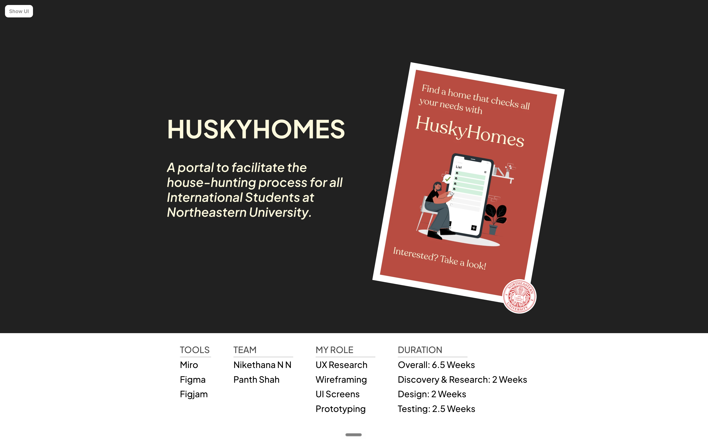
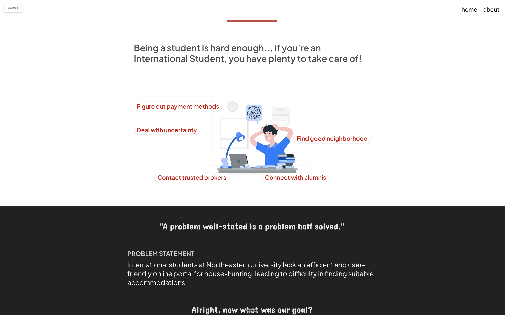
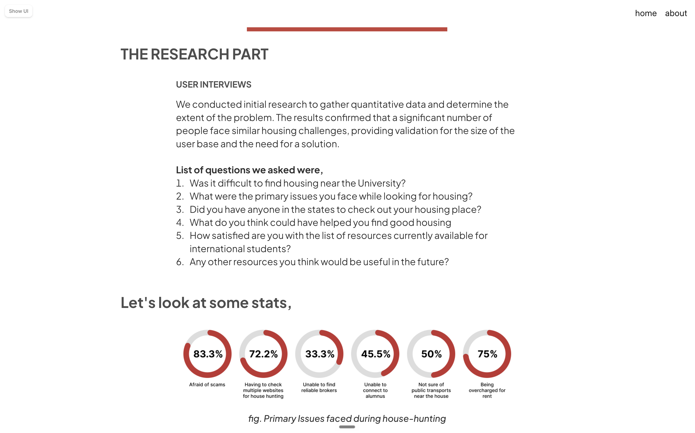
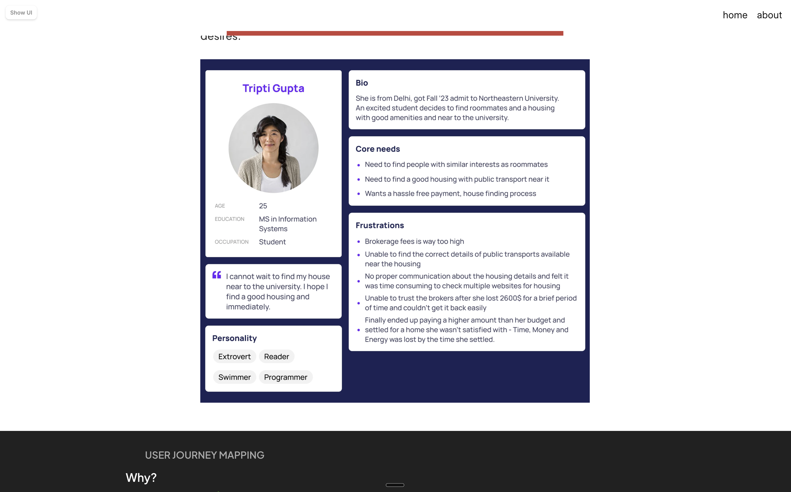
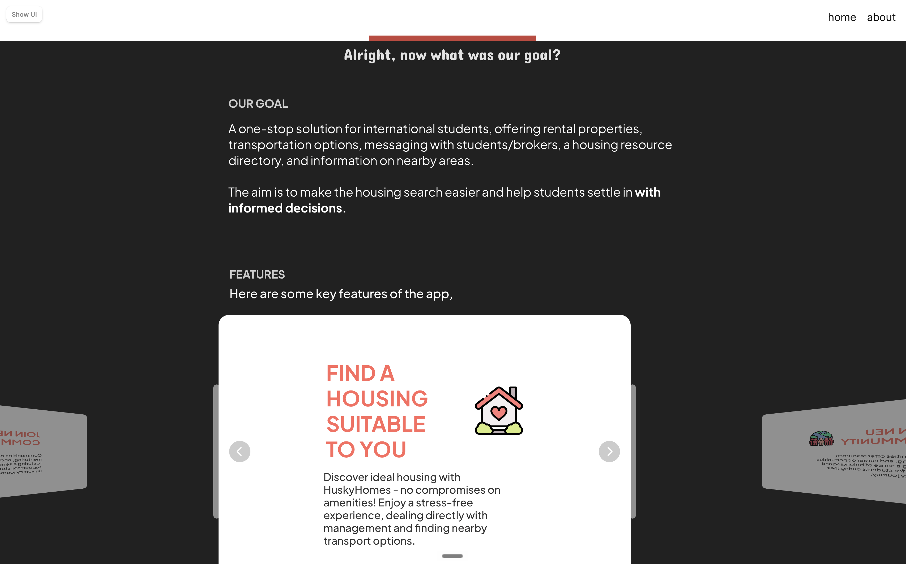
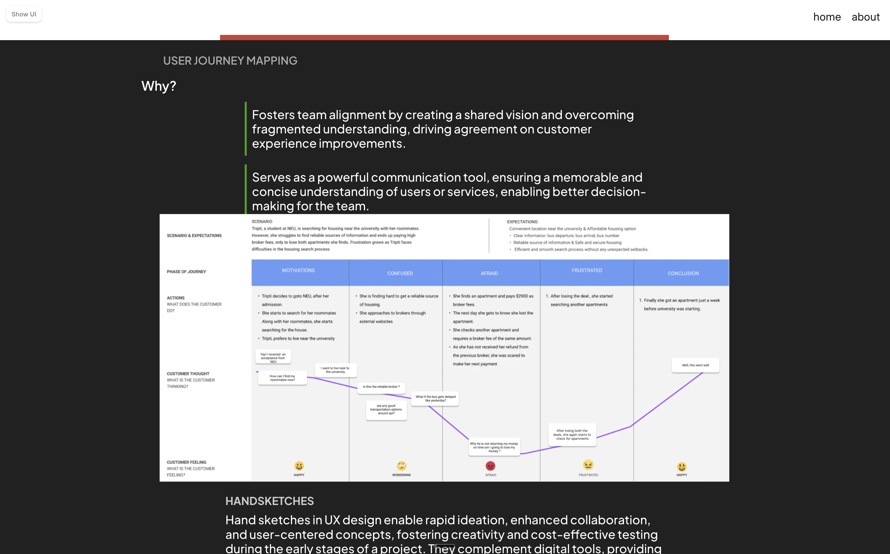
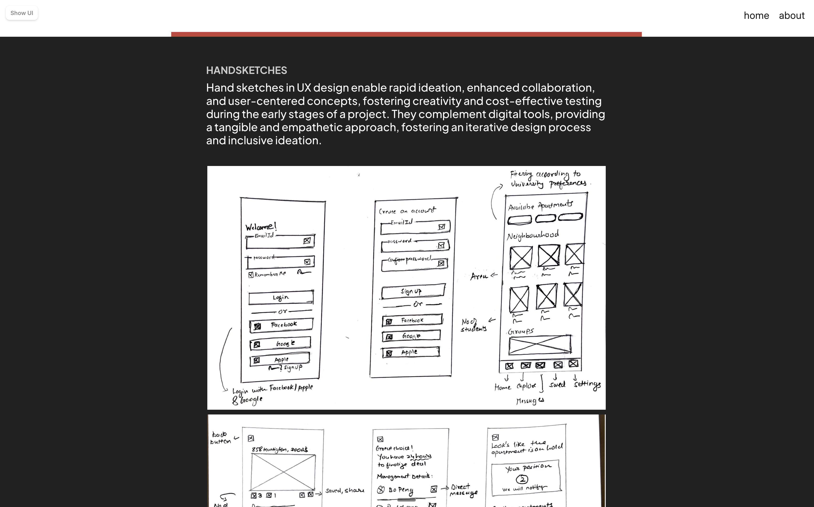
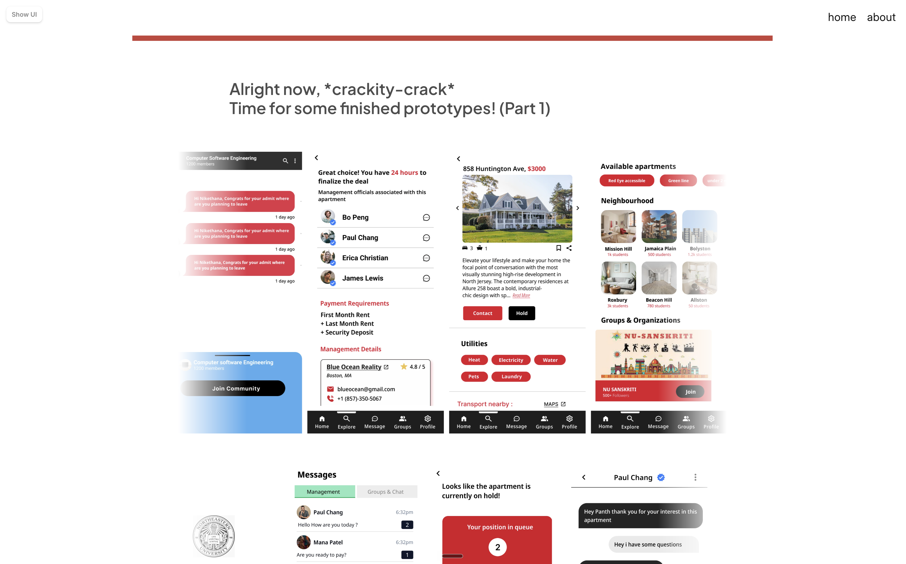
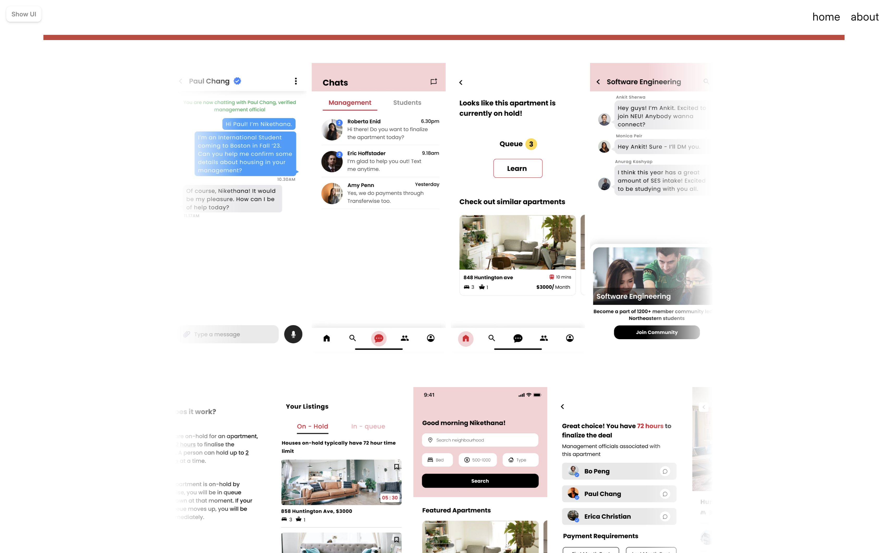
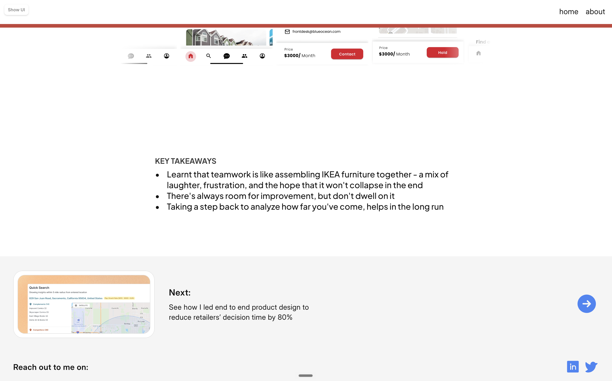

Student Project — Archive
HuskyHomes: Simplifying Housing Search for International Students
A 6.5-week UX research and prototyping project for Northeastern students navigating housing from abroad.
RoleUX Research, Wireframing, UI Design, Prototyping
Timeline6.5 weeks
TeamNikethana N N, Panth Shah
ToolsMiro, Figma, FigJam
Context
International students often search for housing remotely, with limited local knowledge and high risk around brokers, payments, and neighborhood fit.
Direction
We designed a portal that combines verified listings, transport context, broker/student messaging, communities, and a hold-and-queue flow.
My Focus
I helped translate research signals into product decisions, user flows, early sketches, and mobile screens that reduced uncertainty at key moments.

Fig: Original project framing from the student presentation
01Problem
Housing Search Was Fragmented, High-Stakes, and Hard to Trust
Students were not just comparing apartments. They were trying to make a life decision without reliable local context.
International students at Northeastern lacked one trusted place to evaluate housing, understand nearby areas, contact verified brokers, and connect with students who had already navigated the move.
The product challenge was to reduce decision anxiety: make options easier to compare, make broker communication feel safer, and help students understand whether a home fits their daily life before committing money.

Fig: Problem framing from the original deck
02Research
The Research Shifted the Product From Listings to Confidence
The clearest insight was that students needed signals of trust as much as they needed inventory.
We interviewed students about where the housing process broke down: scams, broker reliability, public transit uncertainty, neighborhood context, and the emotional load of making decisions from another country.
The strongest patterns were practical but deeply human. Students wanted verified brokers, area-based listings, transport clarity, and access to seniors or communities who could sanity-check decisions before money changed hands.
83%
Afraid of housing scams
72%
Checked multiple websites
75%
Worried about being overcharged
85%
Wanted area-based listings

Fig: Interview questions and initial quantitative readout

Fig: Persona used to align the team around student needs
03Design Direction
A Portal Built Around the Moments Students Felt Least Certain
Each feature mapped back to a moment where students needed reassurance, context, or a next step.
The direction became a one-stop housing portal: rental listings, transport and neighborhood context, messaging with students or brokers, student communities, and a resource layer for local guidance.
Two flows became especially important: a 72-hour hold-and-queue system to reduce pressure around fast-moving listings, and community access so students could ask peers for local validation before making a decision.

Fig: Product goal and first feature framing

Fig: Journey mapping helped connect pain points to product decisions

Fig: Early sketches before moving into higher-fidelity mobile screens
04Prototype
The Prototype Focused on Trust, Timing, and Student Support
The screens were not just about browsing apartments; they gave students ways to verify, ask, hold, and decide.
The final prototype pulled the core experience into mobile flows: home search, available apartments, broker contact, student communities, direct messaging, and the hold queue.
The goal was to make the housing process feel less like an anonymous transaction and more like a guided decision with backup: verified people, clear next steps, and visible timing constraints.

Fig: Finished prototype overview

Fig: Messaging, hold queue, listings, and community flows
05Reflection
What I Would Tighten Today
The concept had strong user empathy; the next pass would need sharper prioritization and system thinking.
This project taught me how quickly a product can become too broad when the team is trying to solve every pain point at once. The strongest parts were the trust-based decisions: verified brokers, peer support, neighborhood context, and the hold queue.
If I revisited it now, I would simplify the MVP around one core loop: search for a home, understand fit, verify trust, and reserve safely. The rest would become supporting systems, not equal-weight features.

Fig: Original student-project takeaways